37 处理张量
37.1 对各元素进行计算
张量×函数,等于张量中的每个元素分别计算函数值
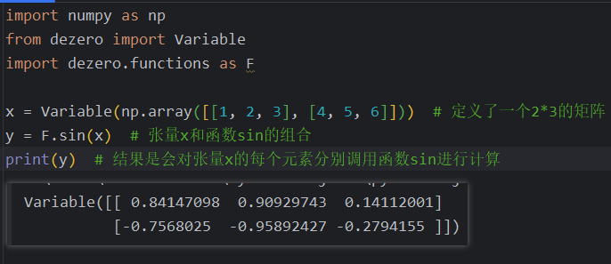
x和y的形状是相同的都是一行三列的矩阵,这样就能在张量的元素之间建立一一对应的关系.
Numpy还有一个功能叫做广播(广泛传播):他可以对不同形状的张量,通过补齐数据变成相同形状然后计算.
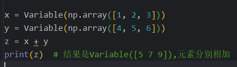
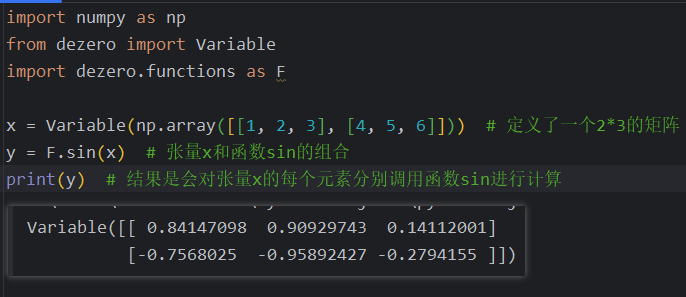
x和y的形状是相同的都是一行三列的矩阵,这样就能在张量的元素之间建立一一对应的关系.
Numpy还有一个功能叫做广播(广泛传播):他可以对不同形状的张量,通过补齐数据变成相同形状然后计算.
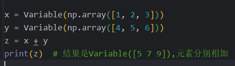
37.2 使用张量时的反向传播
概念:梯度(gradient),张量的导数就是梯度.
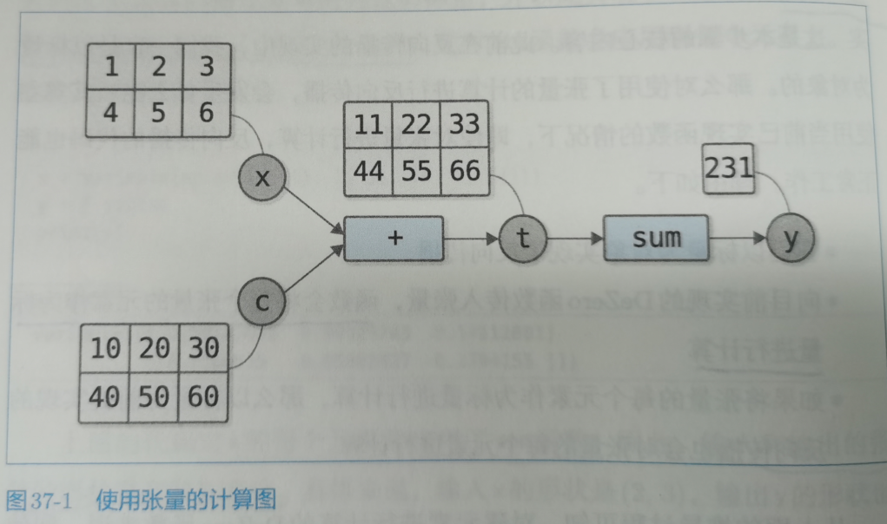
代码依然能正常传播,原因如下: 首先我们实现的是标量的反向传播,然后函数会把张量拆开当成一个一个标量来处理,所以我们对于标量的实现的反向传播自然也没有问题. 机器学习的问题中通常会设置一个张量作为输入,以标量为输出的函数(损失函数). 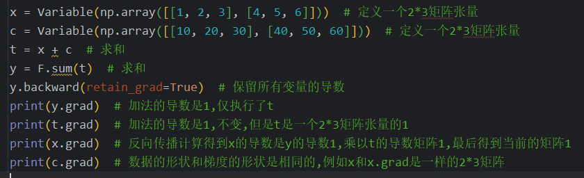
代码依然能正常传播,原因如下: 首先我们实现的是标量的反向传播,然后函数会把张量拆开当成一个一个标量来处理,所以我们对于标量的实现的反向传播自然也没有问题. 机器学习的问题中通常会设置一个张量作为输入,以标量为输出的函数(损失函数). 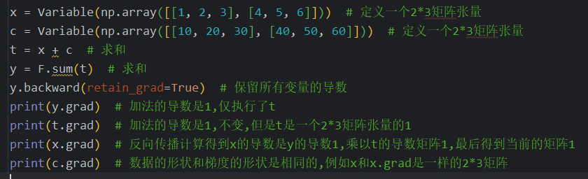
37.3 使用张量时的反向传播(补充内容)
考虑向量的反向传播,y=F(x),y和x都是向量,设两个向量的元素都是n.张量可以通过预处理转换成一维向量,所以同样适用.
这个对每个y求每个x的导数得到的矩阵,就是雅克比矩阵.
如果y只有一个,那就只用y对所有x求导得到的就是1*n雅克比矩阵,是一个行向量.
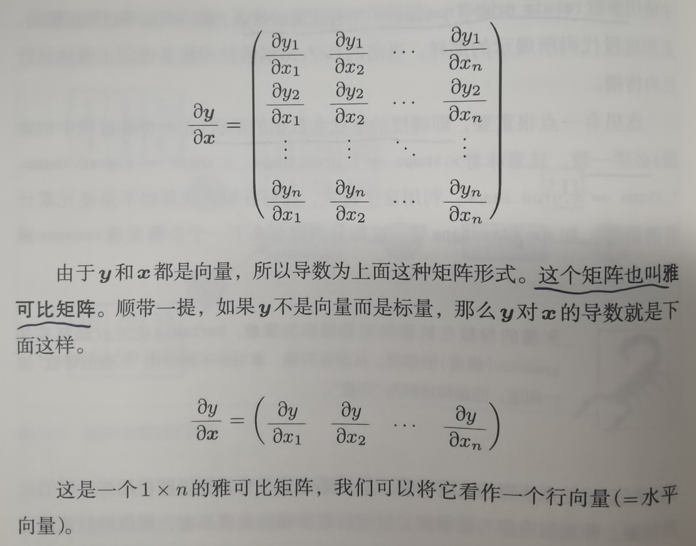
考虑一个复合函数,根据链式法则,如果我们前向传播对所有x的导,那就每次都不需要计算一个雅克比矩阵,传播几次,就要计算几个,复杂度是很高的.
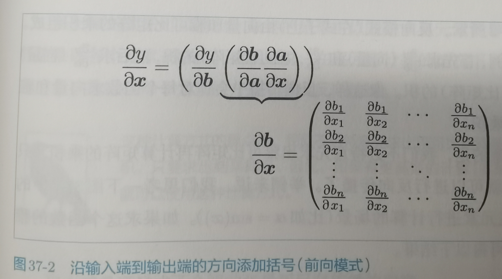
如果我们反过来进行传播,首先求的事y对b求导,因为y是标量,所以y对b的求导结果是一个1*n的雅克比矩阵,也可以说是一个行向量,然后b对a的导数是一个雅克比矩阵,然后乘以一个行向量,结果依然是一个行向量,继续传播,这远比正向传播的高效.
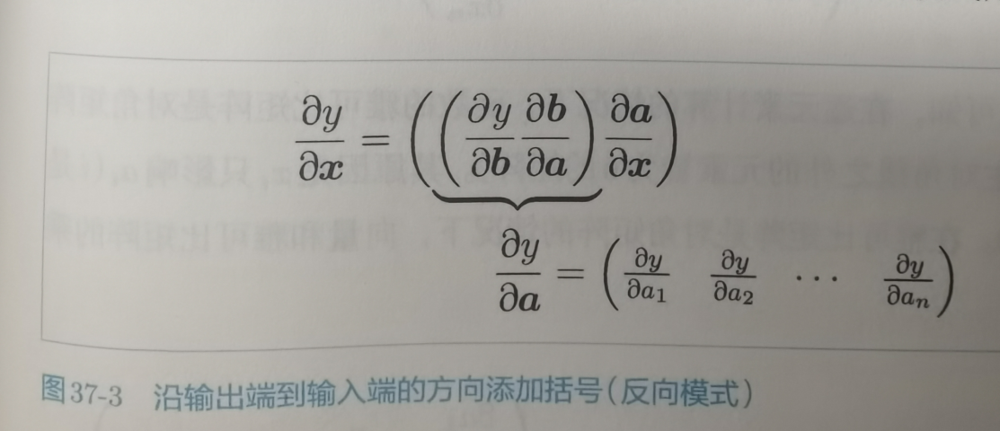
我们并不需要完全求出雅克比矩阵才能进行计算,利用雅克比矩阵是对角矩阵,Xi只会影响ai,所以我们可以通过各元素乘以导数的方式求结果,而不用构建雅克比矩阵.(还有一点不太清晰)
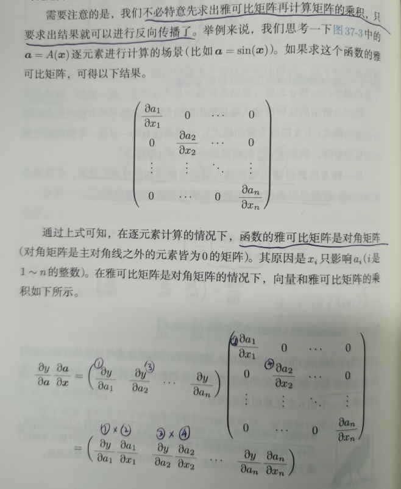
这个对每个y求每个x的导数得到的矩阵,就是雅克比矩阵.
如果y只有一个,那就只用y对所有x求导得到的就是1*n雅克比矩阵,是一个行向量.
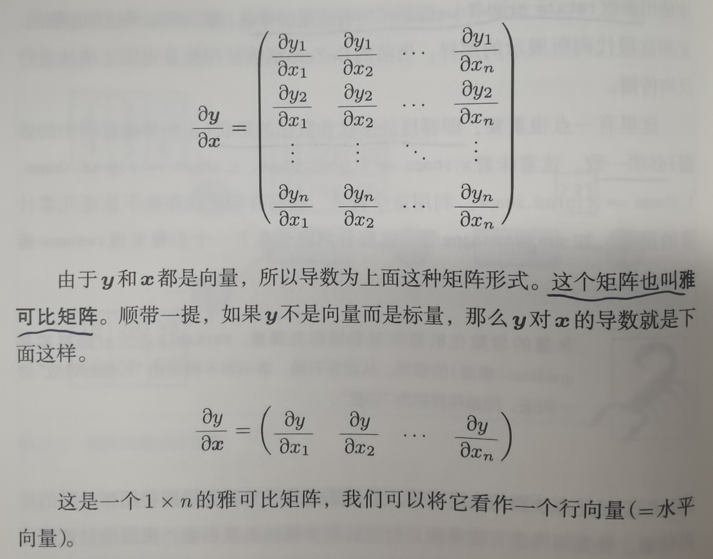
考虑一个复合函数,根据链式法则,如果我们前向传播对所有x的导,那就每次都不需要计算一个雅克比矩阵,传播几次,就要计算几个,复杂度是很高的.
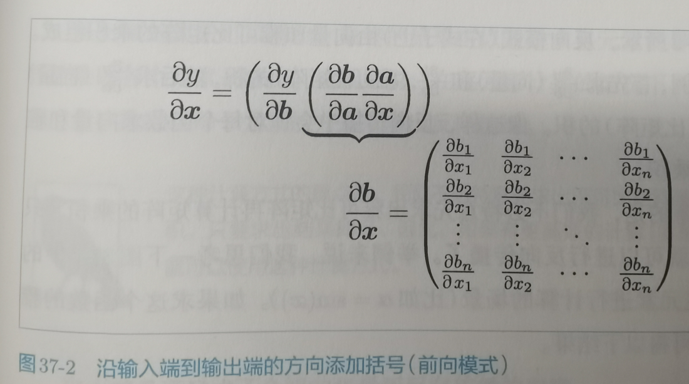
如果我们反过来进行传播,首先求的事y对b求导,因为y是标量,所以y对b的求导结果是一个1*n的雅克比矩阵,也可以说是一个行向量,然后b对a的导数是一个雅克比矩阵,然后乘以一个行向量,结果依然是一个行向量,继续传播,这远比正向传播的高效.
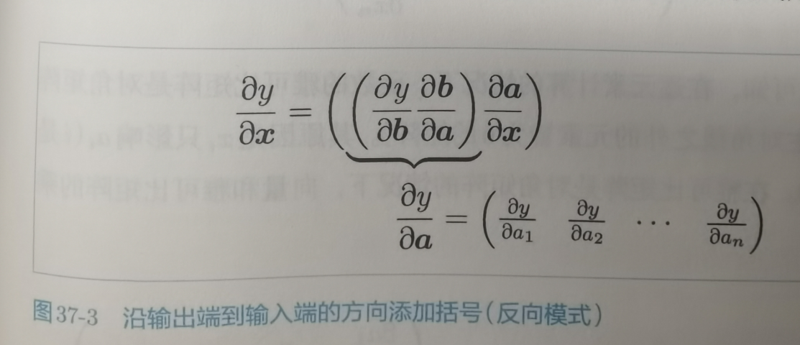
我们并不需要完全求出雅克比矩阵才能进行计算,利用雅克比矩阵是对角矩阵,Xi只会影响ai,所以我们可以通过各元素乘以导数的方式求结果,而不用构建雅克比矩阵.(还有一点不太清晰)
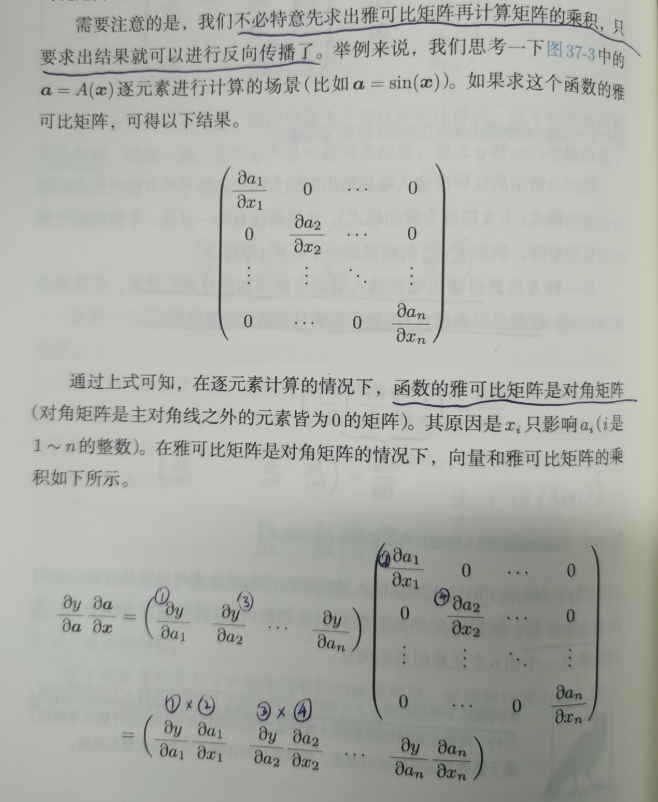